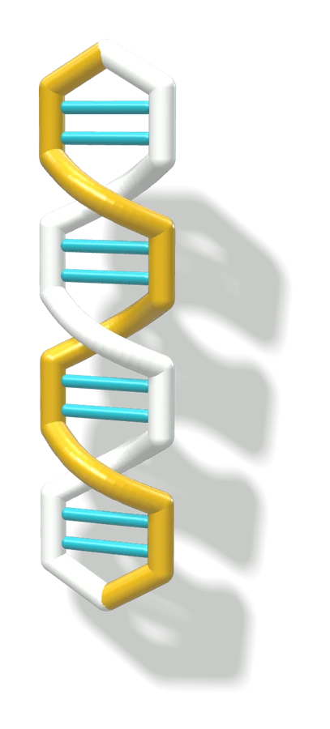

كيف تعمل سماتHow SIMAT works
من لحظة وصول النتيجة إلى آخر قريب يختار أن يُفحص: هذا هو المسار كاملًا، ومن يرى ماذا، وأين يتدخل الإنسان.From the moment a result arrives to the last relative who chooses to be tested: the whole pathway, who sees what, and where a person steps in.
من أين يبدأ المسارWhere the pathway begins
أي نتيجة فحص وراثي يُجريها أحد أفراد الأسرة وتُحفظ في سجل وزارة الصحة يمكن أن تبدأ المسار. هذه أبرز الأمثلة اليوم:Any genetic test result a family member receives, once it is in the Ministry of Health record, can start the pathway. These are the main examples today:
نتيجة ما قبل الزواج: حامل للصفةPremarital result: carrier
تعرف أنك تحمل الصفة. صحتك لا تتغيّر، لكن المعلومة تهمّ شريكك المستقبلي وأقاربك.You learn you carry a trait. Your health does not change, but the information matters to a future partner and to your relatives.
الفهم ← الاستشارة ← دعوة الأقارب ← فحص الأقاربUnderstand → counselling → relatives invited → relatives testedزوجان كلاهما حاملBoth partners carry the trait
احتمال إصابة الطفل 1 من 4 في كل حمل. تشرح الجلسة ذلك وتعرض كل الخيارات بالوزن نفسه، مع مستشار بشري للزوجين معًا.Each pregnancy has a 1 in 4 chance of an affected child. The session explains this and lays out every option with equal weight, with a human counsellor for the couple together.
الجلسة المشتركة ← المستشار ← قرار الزوجينJoint session → counsellor → the couple’s decisionنتيجة المولود: حامل للصفةNewborn result: trait
أحد الوالدين على الأقل يحمل الصفة. يبدأ المسار بفحص الوالدين، ثم يمتد إلى الأسرة.At least one parent carries the trait. The path starts by testing both parents, then extends to the family.
فحص الوالدين ← الاستشارة ← الأسرة الممتدةTest both parents → counselling → wider familyقريب تلقّى دعوةA relative who was invited
تصلك دعوة رسمية لا تذكر اسم أحد. تحجز فحصًا، وتصلك نتيجتك وحدك، وإن كنت حاملًا يبدأ مسارك الخاص.You receive an official invitation that names nobody. You book a test, the result reaches only you, and if you carry the trait your own pathway begins.
الحجز ← الفحص ← نتيجة خاصة ← مساركBook → test → private result → your own pathست خطوات من النتيجة إلى المتابعةSix steps from result to follow-up
وصول النتيجةThe result arrives
يصل التقرير من مختبر الفحص إلى سمات تلقائيًا، ويصل إشعار إلى صاحب النتيجة عبر بوابته. لا تظهر النتيجة لأي قريب.The report flows from the screening lab to SIMAT automatically, and the person is notified in their portal. No relative ever sees it.
ربط المختبر · محاكاةLab connection · simulatedفهم النتيجةUnderstanding the result
شرح بلغة بسيطة: ماذا تعني «حامل للصفة» وماذا لا تعني. حامل الصفة سليم في الغالب، والنتيجة لا تغيّر صحته اليوم.A plain-language explanation of what “carrier” means and what it does not. Carriers are usually healthy, and the result does not change their health today.
جلسة الاستشارةThe counselling session
جلسة عربية منظّمة من أربعة أجزاء، يمكن إيقافها والعودة إليها في أي وقت:A structured Arabic session in four parts, which can be paused and resumed at any time:
- نتيجتك ومعناهاYour result and what it means
- كيف تُورَّث: احتمالات الأبناءHow it is inherited: the chances for children
- خياراتك، كلها بالوزن نفسهYour options, all with equal weight
- أسئلتك، ومستشار بشري متاح في أي لحظةYour questions, with a human counsellor available at any moment
تنتهي الجلسة بسؤال واحد: هل لديك ما تحتاجه لتقرّر؟ نسجّل جوابك، لا قرارك.The session ends with one question: do you have what you need to decide? We record the answer, not the decision.
الأسرةThe family
ترتبط سمات بشجرة الأسرة في سجل وزارة الصحة، فتعرف من الأقارب المعنيّين بالصفة: الوالدان والإخوة أولًا، ثم الأعمام والأخوال وأبناؤهم. ويرى صاحب النتيجة أدوارهم فقط، دون أسماء أو نتائج.SIMAT is linked to the family tree in the Ministry of Health record, so it knows which relatives the trait concerns: parents and siblings first, then aunts, uncles and cousins. The person sees only their roles, never names or results.
الحجزBooking
مواعيد الفحص التأكيدي والاستشارة عبر صحتي، مع تذكيرات. ويحجز القريب المدعوّ موعده بنفسه.Confirmatory testing and counselling appointments through Sehhaty, with reminders. An invited relative books their own appointment.
صحتي · محاكاةSehhaty · simulatedالمتابعة والنتائج الخاصةFollow-up and private results
نتيجة كل قريب تصله وحده. وإن كان حاملًا للصفة يبدأ مساره من الخطوة الثانية، بجلسة استشارة خاصة به.Each relative’s result reaches only them. If they carry the trait, their own path starts at step 2 with a counselling session of their own.
حين يحمل الوالدان كلاهما الصفةWhen both parents carry the trait
لكل إنسان نسختان من الجين، واحدة من كل والد. الحامل للصفة لديه نسخة نموذجية ونسخة تحمل الصفة. وفي كل حمل يمرّر كل والد إحدى نسختيه بالصدفة.Everyone has two copies of the gene, one from each parent. A carrier has one typical copy and one trait copy. In each pregnancy, each parent passes on one of their two copies by chance.
- 1 من 4: الطفل غير حامل للصفة.1 in 4: the child does not carry the trait.
- 2 من 4: الطفل حامل للصفة مثل والديه.2 in 4: the child is a carrier, like the parents.
- 1 من 4: الطفل مصاب.1 in 4: the child is affected.
الاحتمال نفسه في كل حمل، ولا «يُستهلك» بإنجاب طفل مصاب أو سليم. وإذا كان أحد الوالدين فقط حاملًا، فلا يُصاب أي طفل، واحتمال أن يكون الطفل حاملًا 1 من 2.The chance is the same in every pregnancy; it is not “used up” by having an affected or unaffected child. If only one parent is a carrier, no child is affected, and each child has a 1 in 2 chance of being a carrier.
ما يحدث في الخلفيةWhat happens in the background
في النموذج التجريبي كل ربط بنظام خارجي محاكاة، ومُعلَّم بذلك.In the demo, every connection to an outside system is simulated and labelled as such.
المختبرThe laboratory
يرسل نتيجة الفحص بصيغة منظّمة.Sends the screening result in a structured format.
محاكاة في النموذجSimulated in the demoسماتSIMAT
تطبّق الدليل السريري للحالة وتفتح المسار.Applies the condition’s clinical rulebook and opens the pathway.
فرز المستشارينCounsellor triage
الحالات المعقّدة وطلبات التواصل تصل إلى مستشار بشري.Complex cases and contact requests reach a human counsellor.
صحتيSehhaty
حجز الفحوص والاستشارات والتذكيرات.Booking tests and counselling, with reminders.
محاكاة في النموذجSimulated in the demoتقارير البرنامجProgramme reporting
مؤشرات مُجمَّعة غير معرِّفة لمالك البرنامج.Aggregated, de-identified indicators for the programme owner.
متى يتدخّل الإنسانWhen a person steps in
مستشار في كل خطوةA counsellor at every step
زر «تحدّث مع مستشار» ثابت في كل شاشة، ويصل الطلب إلى قائمة الفرز فورًا.A “Talk to a counsellor” button sits on every screen, and the request reaches the triage queue immediately.
الأسئلة الشرعية لأهلهاReligious questions go to scholars
لا تجيب المنصة عن الأسئلة الشرعية، وتحيلها إلى جهات الفتوى المختصة.The platform does not answer religious questions; it refers them to qualified scholars.
الضيق والقلقDistress and worry
إذا عبّر الشخص عن ضيق، يُعرض عليه التواصل مع مستشار قبل أي خطوة أخرى.If a person expresses distress, contact with a counsellor is offered before any other step.